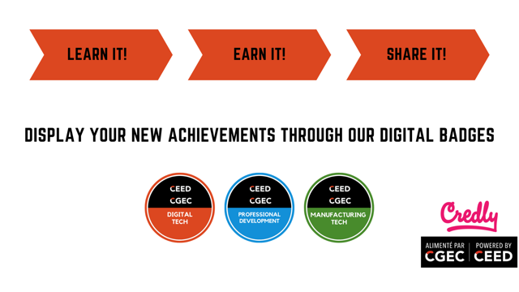

THE DEVELOPMENT PROGRAM
Overview
With the World Wide Web connecting experiences from across the globe, many of today’s professional skills can be effectively self-taught outside the traditional and costly classroom method. The problem is no matter how talented a person becomes, they will still lack an official accreditation for their skill. The classic certificates can expand employment opportunities, but they are difficult to plan and hard to verify by employers. Our modular Development Program is designed to plan, track, and accredit your skill development effortlessly. The Development Program will make use of industry standardized certificates that are convenient to share, and electronically verifiable for your future employers.
The Development program not only allows you to track your development on your own time, but it also allows you to:
Skills & Badges
The Centre for Entrepreneurship and Engineering Design (CEED) has always been committed to helping students and community members achieve success.
In addition to our free basic introductory workshops, you can now achieve higher level of technical abilities in each skill offered by the development program. As you progress in building your skill sets, you will unlock new tasks and challenges designed to push your limits into a whole new level. Once you are confident in your abilities you can tackle our proficiency projects. The hands-on proficiency projects are qualifying projects put together by our expert team to test your abilities to complete a project at a specific level of quality (intermediate, advanced, mastery) upon satisfactory completion of each proficiency project you will be rewarded with the appropriate digital badeg.
To help you understand the structure better, we made a flow diagram of skill progression HERE.
{kind=link}
Digital Badges
{kind=link}
Digital Technologies
- 3D-Printing
- Laser Cutting
- Arduino
- Soldering
- Virtual reality
- Embroidery
Professional development
- Design Thinking
- Entrepreneurship Basics
- Project Management
- Effective Communication (written and oral)
Manufacturing Technologies
- Shop Fundamentals
- Lathe
- Mill
- CNC
- Welding
Volunteer
Gaining experiences through volunteering is an excellent way to broaden your horizons and acquire valuable skills required in the working world! Numerous studies show that those who volunteer to help others also feel better about themselves. With your desire to enrich your community and your own life, and by giving your time and expertise, you will realize that you truly can make a difference.
The development program will improve our current volunteer program. In particular the development program will focus on guiding our volunteers to complete increasingly challenging tasks to develop their skills and reward them in the process. To understand how the volunteer portion of the development program work click here.
Volunteers can now:
We have compiled an updated info sheet HERE, and a presentation HERE to guild you on the registration process and how the program work.
Courses
What's better than a course that's only hand-on? the fact that you will have no final!!.
Starting summer 2020 Graduate and Undergrad students will be able to register for an official course as part of the development program and earn credits.
Requirements before being accepted to the course:
On completion of the course you will have:
For more information about the graduate level course click HERE
For more information about the undergrad level course stay toned
Employment
Not only will the development program build your personal skills, but it will make you more attractive to employers. The different proficiency level badges and the trainings will offer you an opportunity to find employment opportunities with the Centre for Entrepreneurship and Engineering Design (CEED) and other organizations.
CEED hires over 50 students every term in addition to 15 TAs for the courses.
We are also currently working with industry partners and government branshes to add their desired skills to our program
Contact.
Do you want know more? Email us and we will answer all your questions
Mohamed Elsageyer
Team lead
melsa036@uottawa.ca
Stephanie Chiarotto
Volunteer Coordinator
volunteer@makerrepo.com